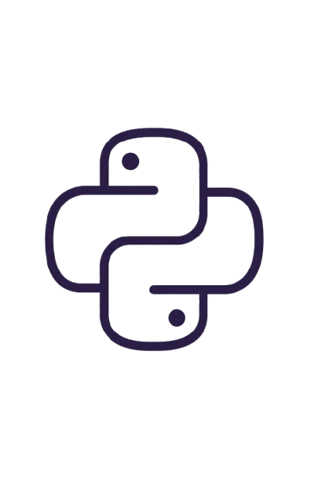
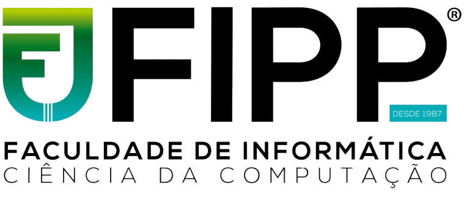
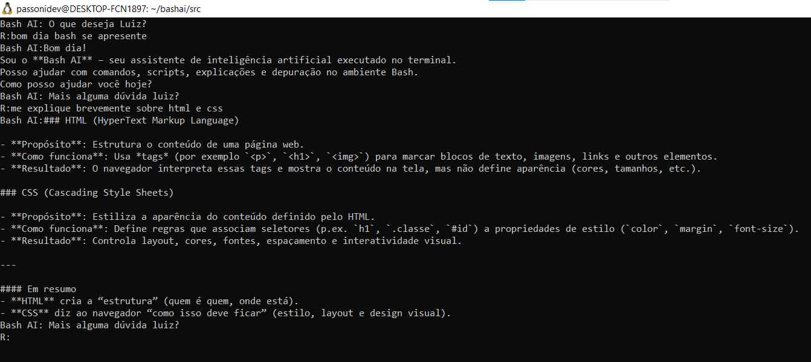
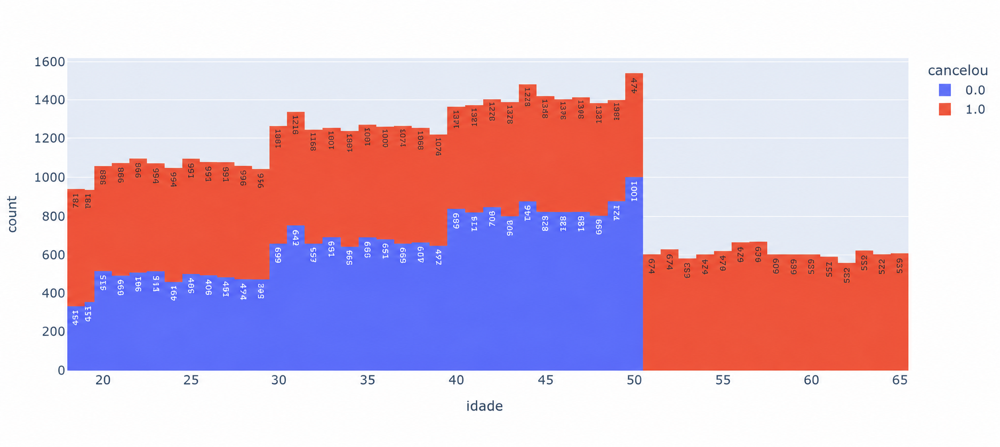

Meu nome é Luiz Otavio Passoni Souza Estevam, sou estudante de Ciências da Computação na Unoeste (FIPP – Faculdade de Informática de Presidente Prudente), em Presidente Prudente/SP.
Atualmente, meu foco está voltado para o campo de Inteligência Artificial. Tenho me dedicado a construir uma base técnica sólida, passando por fundamentos de programação, lógica computacional e ambientes de desenvolvimento como Linux/WSL, que fazem parte da rotina de quem trabalha com tecnologia no dia a dia. Meu objetivo é me tornar Engenheiro de IA, atuando em projetar, construir, testar e colocar em prática sistemas e modelos de inteligência artificial em empresas.
Durante a faculdade, tive a oportunidade de atuar na área de e-commerce na empresa Implementa Ecommerce, onde fui responsável por auxiliar na estruturação de lojas virtuais. Nessa função, participei do processo de montagem e organização das lojas online, desde a configuração inicial até ajustes voltados para melhorar a experiência do cliente, o que me proporcionou uma vivência prática sobre como negócios digitais funcionam na prática.



O Bash AI é um assistente de inteligência artificial desenvolvido em Python e executado diretamente pelo terminal. O projeto permite que o usuário interaja com modelos de IA por meio de uma interface de linha de comando simples e rápida, sem a necessidade de utilizar uma interface gráfica.
O sistema possui recursos para gerenciar conversas, iniciar novos chats, limpar o contexto, trocar o modelo utilizado e executar comandos personalizados, proporcionando uma experiência de interação com IA diretamente no ambiente de desenvolvimento. O Bash AI também foi desenvolvido com foco em velocidade, praticidade e integração com APIs de modelos de inteligência artificial.

O Projeto de Análise de Dados é uma aplicação desenvolvida em Python com o objetivo de realizar a leitura, organização e análise de conjuntos de dados. Utilizando bibliotecas como Pandas e Plotly, o projeto permite manipular informações, identificar padrões e extrair dados relevantes de forma estruturada.
A aplicação também utiliza recursos de visualização de dados para transformar informações em gráficos interativos e facilitar a interpretação dos resultados. O projeto demonstra conhecimentos em manipulação de dados, análise exploratória, tratamento de informações e criação de visualizações, utilizando ferramentas amplamente empregadas na área de ciência de dados.